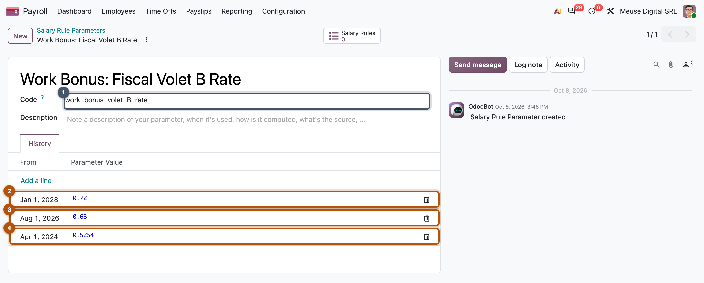

Laws that change over time
Effective dates, indexation, yearly tables, reference units, mid-year and retroactive changes, downloaded rates, and the dated parameter that absorbs them
- Model any legal value as a timeline of effective dates
- Tell indexation of wages (employee data) from a new table or unit (country data)
- Say which parameter value Odoo uses for a payslip, and why the period end decides
- Handle a scheduled reform, a mid-year change, and a law that applies to the past
- Choose between typing rates into data files and downloading them from the administration
Every country changes its payroll law on its own calendar. In 2026 Mexico got new tax tables on 1 January and a new reference unit on 1 February; Australia switches its superannuation basis on 1 July; Belgium needed a new withholding formula on 1 November. A payslip of the old period, reopened a year later, must still show the old amount. Payroll must always answer: what was the law on that date?
Where a change goes
When the law changes, the first question is what changed. Each kind of change has one home in Odoo, and in all three cases the payslip reads what was valid on its own dates.
hr.version, datedhr.rule.parameterEvery legal value is a timeline
A rate is never "13.07 %". It is "13.07 % from a date, until a later value replaces it". The law changes on several rhythms:
| Rhythm | Example | What the module stores |
|---|---|---|
| Yearly tables and units | MX tax tables each 1 January, reference unit each 1 February | one new value per year |
| Wage indexation | BE sector wages +2.21 % on 1 Jan 20263 | a new version of each contract |
| Scheduled reform | MX employer pension rates loaded up to 2030 | future values, loaded in advance |
| Mid-year change | AU super on 1 Jul; BE withholding on 1 Nov 2026 | a dated value, sometimes a rule branch |
| Retroactive change | BE overtime reduction published in July, in force from 1 Jan | a past-dated value, plus corrections |
Key idea
Store every legal value with its start date, and never edit a value that has already been used. A new law is a new dated record. Then every payslip, old or new, recomputes with the law of its own period.
1 Jan 2026: MX tax tables, MX minimum wage, BE scale and index → 1 Feb: MX reference unit → 1 Jul: AU super basis → 1 Aug: BE notice table → 1 Nov: BE second tax formula of the year (and in July, a BE decree reaching back to 1 Jan).
Indexation: a new wage, not a new parameter
Some countries raise wages automatically with prices. The percentage is law; the result is a new wage for each person.
Worked example: Mélanie on 1 January 2026
Belgian sector wages rose by 2.21 % on 1 January 2026.3 Mélanie's 2025 salary of 3,913.51 € became 4,000.00 €.4
| Before 1 Jan 2026 | From 1 Jan 2026 | |
|---|---|---|
| Mélanie's monthly salary | 3,913.51 | 4,000.00 |
| Index factor | × 1.0221 |
Indexation is a law about every employee's wage, so its result is employee data. Odoo stores it as a new version of the contract, not as a rule parameter.
In Odoo. The Salary Increase wizard (hr.payroll.salary.increase, Chapter 13) takes employees, a date and a rate. It does not change the old version: it adds one per employee, starting on the indexation date. Each payslip then picks the version valid in its period, so December keeps the old wage and January gets the new one. If January was already validated when the indexation is entered, the wizard opens the correction wizard (Chapter 15).
Yearly tables: one dated value per year
Most countries reissue their tax tables every year. The design is the same everywhere: one parameter, one value per year, the same shape every year (a list of brackets, or a dict of lists by frequency in Mexico). The Belgian value for 2026:
<record id="rule_parameter_value_prp_basic_bareme_2026" model="hr.rule.parameter.value">
<field name="parameter_value">[(16710.0, 0.2675), (29500.0, 0.428), (51050.0, 0.4815), (None, 0.535)]</field>
<field name="rule_parameter_id" ref="rule_parameter_prp_basic_bareme"/>
<field name="date_from" eval="datetime(2026, 1, 1).date()"/>
</record>
Its bands match the official formula (16,710 / 29,500 / 51,050).2 That check, value by value against the source, is the yearly upkeep of a localization (Chapter 22).
Common pitfall
Editing last year's value to this year's bands "because it is January". Every recomputed payslip of last year (a correction, a year-end certificate, a test) then silently uses this year's law. Add a record; never overwrite history.
How Odoo picks the value for a payslip
A salary rule asks for a parameter by its code. It never mentions a date.
# in a rule or a helper on hr.payslip
uma = payslip._rule_parameter('l10n_mx_uma')['daily']
The engine returns the latest value whose date_from is on or before the payslip's end date (date_to). Two consequences for the law: a value starting on the 16th applies to the whole period, and a value has no end date, so a temporary measure is two values (the measure, and the one restoring the baseline). Chapter 21 shows how a rule reads it.
Worked example: Jurgen, July and August 2026
A Belgian tax reduction for low wages rises on 1 August 2026. Jurgen's July payslip reads the old value, his August payslip the new one.4
| July 2026 | August 2026 | |
|---|---|---|
| Withholding before the reduction | 294.95 | 294.95 |
| Low-wage tax reduction | −132.63 | −150.62 |
| Withholding | 162.32 | 144.33 |
| Net pay | 2,125.06 | 2,143.05 |
The demo database agrees: the August pay run withholds 17.99 € less than July, exactly 150.62 − 132.63.5

Common pitfall
Assuming the work period is what the law looks at. Many texts speak of income paid from a date: a July salary paid on 3 August gets the July value in Odoo. If the payment date decides, the rule must pass it as reference date.
Mid-year changes
A mid-year change of a number is another dated value. A change of method needs code, and the question is how to keep that code dated.
Around the world: Australia, 1 July 2026
Superannuation moves to a new base with a year-to-date cap. The parameter changes shape (a number before, a dict after) and the rule branches on a date in its code:
rule = payslip._rule_parameter("l10n_au_withholding_super")
if payslip.date_from >= date(2026, 7, 1):
prior_slips = payslip._l10n_au_get_year_to_date_slips()
prior_ote = prior_slips._get_line_values(['QE'], compute_sum=True)['QE']['sum']['total']
remaining = max(rule['cap'] - prior_ote, 0)
result = min(categories['QE'], remaining) * rule['rate'] / 100
else:
result = categories['OTE'] * (rule / 100)
But the date now lives in two places, and the rule keys on date_from while the lookup keys on date_to. A weekly payslip from 29 June to 5 July reads the new dict but takes the old branch, which divides a dict by 100 (read from the code, not run: UNVERIFIED). Branching on the parameter's own shape keeps one source of truth.
Worked example: Marie's November rise (Belgium)
The 1 November 2026 formula (Chapter 4) changed three family levers: Marie's withholding rises by 28.86 €, the singles' falls by 8.47 €.1 In Odoo it needs no code: three new records dated 1 November, next to the January ones.
<record id="rule_parameter_value_prp_max_spouse_income_2026_11" model="hr.rule.parameter.value">
<field name="parameter_value">11780.0</field>
<field name="rule_parameter_id" ref="rule_parameter_prp_max_spouse_income"/>
<field name="date_from" eval="datetime(2026, 11, 1).date()"/>
</record>
In practice
On 8 October 2026 master had no value dated 1 November for those parameters: Marie would be under-withheld by 28.86 € a month. The weekly payroll data cron (Chapter 21) delivers the fix without a module upgrade, if it is merged before the November pay runs. Track announced changes with their dates.
Retroactive changes
Sometimes the law is published after its start date. A Belgian decree of 24 July 2026 extended an overtime tax reduction to all sectors from 1 January 2026.1
Start of the rule in the past → Publication → Data update value dated at the start → Computed with the old rule → New and recomputed payslips see the new rule → Correction payslips (Chapter 6, Chapter 15)
A past-dated value fixes new and recomputed payslips. Validated ones record what was paid; the difference becomes a correction. Odoo flags validated payslips when a version, the company settings or the time off change after validation, but not when a rule parameter gets a past-dated value: find those payslips yourself.
Common pitfall
Assuming the system will "catch up" after a retroactive value. It won't. List the validated payslips of the period, recompute them in a correction run, and check whether filed declarations need an amendment.
Rates you download
When the administration publishes rates as a file or an API, a module can load them instead of a developer typing them:
| Country | Source | How it arrives | Where it lands |
|---|---|---|---|
| BE | social-security rate files, per quarter | daily cron + wizard | dated rule parameters |
| CH | cantonal source-tax tariffs | wizard run by the user | dated rule parameters |
| SA | the GOSI API | optional module with a cron | fields on the version |
hr.rule.parameter + valuepayslip._rule_parameter(code)Imported data still goes through dated parameters, so an old quarter's payslip recomputes with that quarter's rates. The closure-fund rate the research could not read on a web page (Chapter 10) arrives this way.5
Common pitfall
A test database or offline server has no downloaded rates, and the lines that read them may silently compute 0. Tests load fixed copies instead. Also, a corrected file for a past period updates that value in place: an intended exception to "never edit history".
Summary
- Every legal value is a timeline. Countries change values yearly (tables, units), quarterly, mid-year, on a multi-year schedule, and sometimes retroactively.
- Indexation changes the wage, so it is a new
hr.version(wizard Salary Increase); a new rate, table or unit is a newhr.rule.parameter.value. - Store a reference unit plus multipliers: one value a year moves every cap.
- A payslip reads the latest value whose
date_fromis on or before itsdate_to; a temporary measure needs a closing value. - A change of number is data; a change of method needs code, and the date should live in one place.
- A retroactive value fixes new and recomputed payslips; validated ones are corrected, and nothing flags them for you.
- Rates published as files or APIs can be imported into dated parameters (BE, CH) or fields (SA); payslips stay reproducible.
-
SPF Finances (Belgian tax office), Annex III AR/CIR 92 for income 2026, consolidated with the AR of 24 July 2026 and the AR of 27 September 2026 (n° 32, 34, 38, 45, 46.2): https://www.minfin.fgov.be/myminfin-web/pages/public/fisconet/document/0c174ec5-448b-4d1e-983b-fc457e5e7e28. ↩↩
-
SPF Finances, key formula from 1 January 2026 (annex 1, basic scale): https://www.minfin.fgov.be/myminfin-web/pages/public/fisconet/document/389035ca-432e-422b-859d-2d32fbdaa4cf. ↩
-
SPF Emploi (Belgian labour ministry), minimum wages of joint committee 200, "Indexation de 2,21% en 1/2026": http://www.salairesminimums.be/document.html?jcId=8e8cddf22c5d4cc9b9fe6234b4ea569e&date=01%2F03%2F2026. ↩↩
-
Independent calculator,
research/numbers_be_calc.md, sections 3, 8 and 10.7. ↩↩ -
Payslips computed by Odoo master on the demo database,
research/numbers_be.md, sections 1 and 6. ↩↩